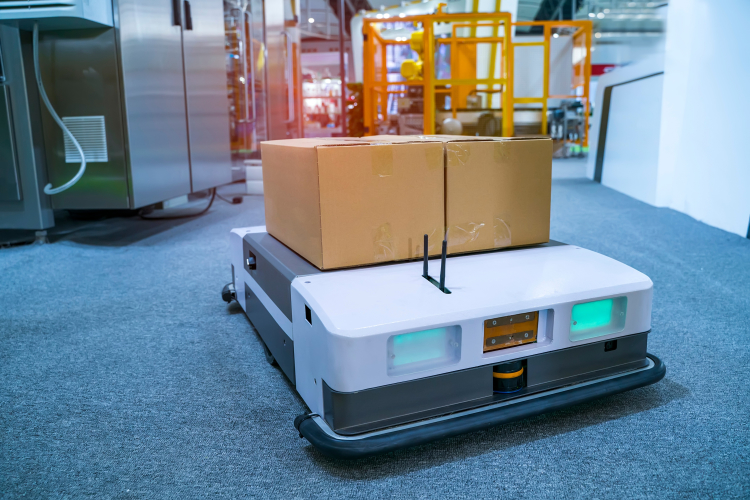
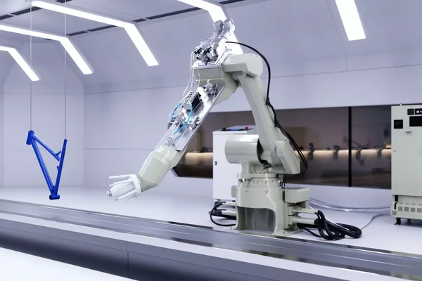
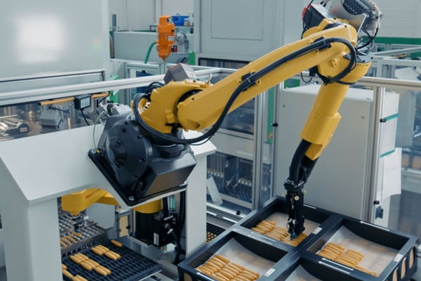
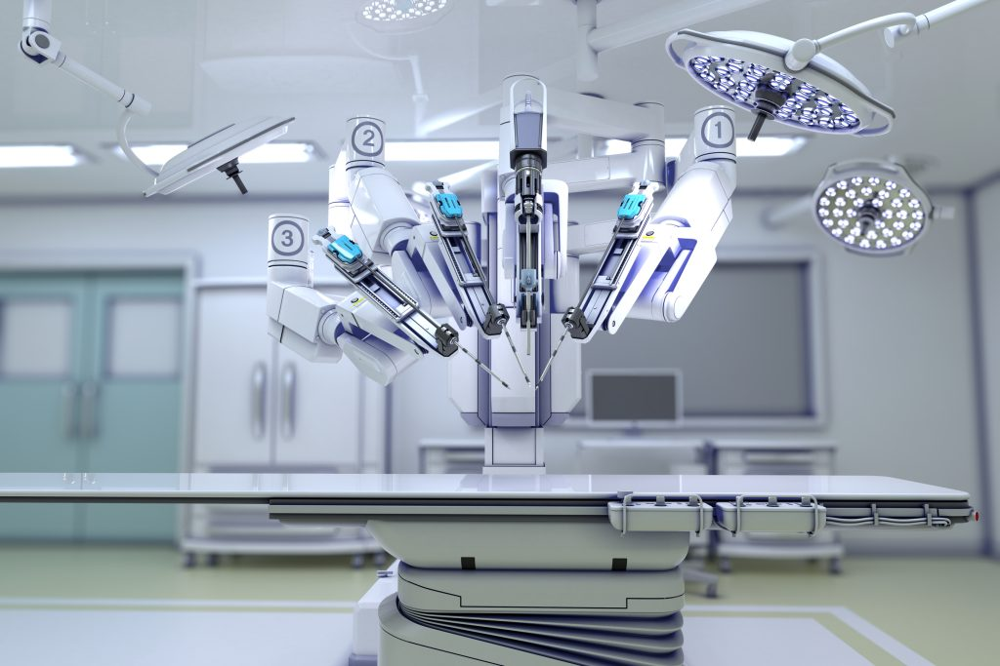
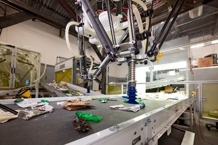

Entre las aplicaciones de la robótica por sectores profesionales se pueden mencionar:
Robots móviles o vehículos autónomos transportan cargas pesadas de un lugar a otro, mejorando la eficiencia y reduciendo el esfuerzo físico humano.
Robots móviles o vehículos autónomos transportan cargas pesadas de un lugar a otro, mejorando la eficiencia y reduciendo el esfuerzo físico humano.
Robots también manejan materiales peligrosos o frágiles que requieren precisión y control para evitar accidentes.
Los robots quirúrgicos proporcionan alta precisión en operaciones mínimamente invasivas, mejorando los resultados y reduciendo el tiempo de recuperación del paciente.
Robots inteligentes identifican y separan plásticos, metales y otros desechos, optimizando la recuperación de recursos y reduciendo la necesidad de intervención manual.
© 2024 RoboTech Innovations. Todos los derechos reservados.